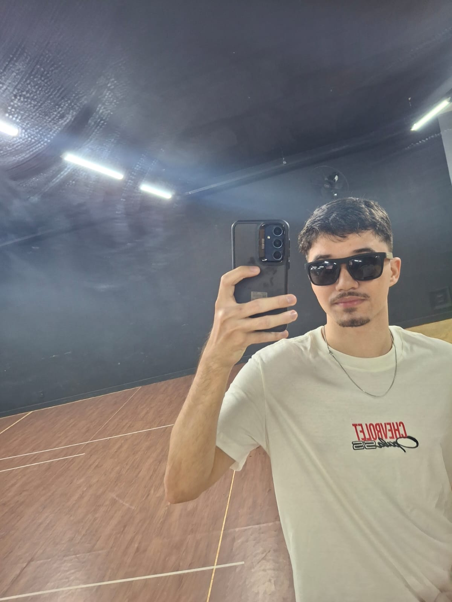

Sou uma pessoa dedicada, comunicativa e sempre interessada em aprender coisas novas. Trabalho atualmente como garçom, função que me ajudou a desenvolver responsabilidade, agilidade e boa comunicação com o público.Tenho concluido um curso de Front-end com Inteligência Artificial, onde aprendi sobre criação de interfaces, lógica de programação e o uso de tecnologias modernas. Busco agora uma oportunidade na área de Tecnologia da Informação para colocar meus conhecimentos em prática e continuar evoluindo profissionalmente.
Ensino Médio Completo:
Escola Estadual Augusto Rushi Concluído em 2022
Ensino Superior:Cursando (previsão de 2030)
Front-end com Inteligência Artificial Concluído
Conhecimento prático em Pacote Office (Word, Excel, PowerPoint)
Noções de HTML, CSS, JavaScript e ferramentas de IA
Boa noção de informática e ambiente digital
Facilidade com tecnologia e aprendizado rápido
Comunicação clara e boa convivência em equipe
Organização e atenção aos detalhes
Proatividade e foco em resultados
Garçom
Restaurante Rio de Janeiro/RJ (2024 / atualmente)
Atendo clientes, organizo pedidos e auxilio na rotina do salão.
Esse trabalho me ensinou a
lidar com diferentes tipos de pessoas, manter a calma em momentos de alta demanda e
trabalhar bem em equipequalidades que pretendo levar também para a área de tecnologia.